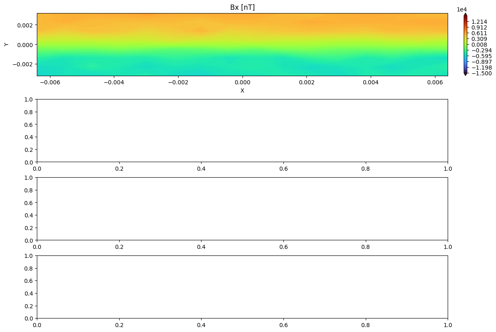

Analyzing AMReX Outputs From FLEKS
In this demo, we show how to analyze native AMReX field and particle outputs. Example data can be downloaded as follows:
import flekspy
from flekspy.util import download_testfile
url = "https://raw.githubusercontent.com/henry2004y/batsrus_data/master/fleks_particle_small.tar.gz"
download_testfile(url, "data")
Inheriting from the IDL procedures, we can pass strings to limit the plotting range (experimental, may be changed in the future):
ds = flekspy.load("data/fleks_particle_small/3d*amrex")
dc = ds.get_slice("z", 0.001)
f, axes = dc.plot(
"Bx<(1.5e4)>(-1.5e4) ({rhos0}+{rhos1})<(1.3e21) pS0 uxs0", figsize=(12, 8)
)
dc.add_stream(axes[0], "Bx", "By", color="w")
dc.add_contour(axes[1], "Bx")
yt : [INFO ] 2025-07-23 16:19:32,804 Parameters: current_time = 40.0
yt : [INFO ] 2025-07-23 16:19:32,804 Parameters: domain_dimensions = [16 8 6]
yt : [INFO ] 2025-07-23 16:19:32,805 Parameters: domain_left_edge = [-0.0064 -0.0032 -0.0024]
yt : [INFO ] 2025-07-23 16:19:32,806 Parameters: domain_right_edge = [0.0064 0.0032 0.0024]
result=(self.get_variable('rhos0',unit)+self.get_variable('rhos1',unit))
---------------------------------------------------------------------------
KeyError Traceback (most recent call last)
Cell In[2], line 4
1 ds = flekspy.load("data/fleks_particle_small/3d*amrex")
2 dc = ds.get_slice("z", 0.001)
----> 4 f, axes = dc.plot(
5 "Bx<(1.5e4)>(-1.5e4) ({rhos0}+{rhos1})<(1.3e21) pS0 uxs0", figsize=(12, 8)
6 )
7 dc.add_stream(axes[0], "Bx", "By", color="w")
8 dc.add_contour(axes[1], "Bx")
File ~/work/flekspy/flekspy/src/flekspy/util/data_container.py:378, in DataContainer2D.plot(self, vars, xlim, ylim, unit, nlevels, cmap, figsize, f, axes, pcolor, logscale, addgrid, bottomline, showcolorbar, *args, **kwargs)
375 axes = axes.reshape(-1)
377 for isub, ax in zip(range(nvar), axes):
--> 378 ytVar = self.evaluate_expression(varNames[isub], unit)
379 v = ytVar
380 varUnit = "dimensionless"
File ~/work/flekspy/flekspy/src/flekspy/util/data_container.py:134, in DataContainer.evaluate_expression(self, expression, unit)
131 print(exp2)
132 exec(exp2)
--> 134 return locals()["result"]
KeyError: 'result'

Velocity Space Distributions
from flekspy.util import unit_one
filename = "data/fleks_particle_small/cut_*amrex"
ds = flekspy.load(filename)
# Add a user defined field. See yt document for more information about derived field.
ds.add_field(
ds.pvar("unit_one"), function=unit_one, sampling_type="particle", units="code_mass"
)
x_field = "p_uy"
y_field = "p_uz"
z_field = "unit_one"
# z_field = "p_w"
xleft = [-0.001, -0.001, -0.001]
xright = [0.001, 0.001, 0.001]
### Select and plot the particles inside a box defined by xleft and xright
region = ds.box(xleft, xright)
pp = ds.plot_phase(
x_field,
y_field,
z_field,
region=region,
unit_type="si",
x_bins=64,
y_bins=64,
domain_size=(-0.0002, 0.0002, -0.0002, 0.0002),
)
pp.set_cmap(pp.fields[0], "turbo")
# plot.set_zlim(plot.fields[0], zmin, zmax)
pp.set_xlabel(r"$V_y$")
pp.set_ylabel(r"$V_z$")
# pp.set_colorbar_label(pp.fields[0], "pw")
pp.set_title(pp.fields[0], "Number density")
pp.set_font(
{
"size": 34,
"family": "DejaVu Sans",
}
)
pp.set_log(pp.fields[0], False)
pp.show()
If you need the direct phase space distributions together with the axis,
x, y, w = ds.get_phase(
x_field,
y_field,
z_field,
region=region,
x_bins=64,
y_bins=64,
domain_size=(-0.0002, 0.0002, -0.0002, 0.0002),
)
To check the newly added field,
ad = ds.all_data()
ad[("particles", "unit_one")]
Plot the location of particles that are inside a sphere
center = [0, 0, 0]
radius = 0.001
z_field = "unit_one"
# Object sphere is defined in yt/data_objects/selection_objects/spheroids.py
sp = ds.sphere(center, radius)
pp = ds.plot_particles(
"p_x", "p_y", z_field, region=sp, unit_type="planet", x_bins=64, y_bins=64
)
pp.show()
Plot the phase space of particles that are inside a sphere
pp = ds.plot_phase(
"p_uy", "p_uz", z_field, region=sp, unit_type="planet", x_bins=64, y_bins=64
)
pp.show()
Plot the location of particles that are inside a disk
center = [0, 0, 0]
normal = [1, 1, 0]
radius = 0.0005
height = 0.0004
z_field = "unit_one"
# Object sphere is defined in yt/data_objects/selection_objects/disk.py
disk = ds.disk(center, normal, radius, height)
pp = ds.plot_particles(
"p_x", "p_y", z_field, region=disk, unit_type="planet", x_bins=64, y_bins=64
)
pp.show()
Plot the phase space of particles that are inside a disk
pp = ds.plot_phase(
"p_uy", "p_uz", z_field, region=disk, unit_type="planet", x_bins=64, y_bins=64
)
pp.show()
Transform the velocity coordinates and visualize the phase space distribution
WIP
import flekspy, yt
l = [1, 0, 0]
m = [0, 1, 0]
n = [0, 0, 1]
def _vel_l(field, data):
res = (
l[0] * data[("particles", "p_ux")]
+ l[1] * data[("particles", "p_uy")]
+ l[2] * data[("particles", "p_uz")]
)
return res
def _vel_m(field, data):
res = (
m[0] * data[("particles", "p_ux")]
+ m[1] * data[("particles", "p_uy")]
+ m[2] * data[("particles", "p_uz")]
)
return res
def _vel_n(field, data):
res = (
n[0] * data[("particles", "p_ux")]
+ n[1] * data[("particles", "p_uy")]
+ n[2] * data[("particles", "p_uz")]
)
return res
filename = "data/fleks_particle_small/cut_*amrex"
ds = flekspy.load(filename)
# Add a user defined field. See yt document for more information about derived field.
vl_name = ds.pvar("vel_l")
vm_name = ds.pvar("vel_m")
vn_name = ds.pvar("vel_n")
ds.add_field(vl_name, units="code_velocity", function=_vel_l, sampling_type="particle")
ds.add_field(vm_name, units="code_velocity", function=_vel_m, sampling_type="particle")
ds.add_field(vn_name, units="code_velocity", function=_vel_n, sampling_type="particle")
######## Plot the location of particles that are inside a sphere ###########
center = [0, 0, 0]
radius = 0.001
# Object sphere is defined in yt/data_objects/selection_objects/spheroids.py
sp = ds.sphere(center, radius)
x_field = vl_name
y_field = vm_name
z_field = ds.pvar("p_w")
logs = {x_field: False, y_field: False}
profile = yt.create_profile(
data_source=sp,
bin_fields=[x_field, y_field],
fields=z_field,
n_bins=[64, 64],
weight_field=None,
logs=logs,
)
pp = yt.PhasePlot.from_profile(profile)
pp.set_unit(x_field, "km/s")
pp.set_unit(y_field, "km/s")
pp.set_unit(z_field, "amu")
pp.set_cmap(pp.fields[0], "turbo")
# pp.set_zlim(pp.fields[0], zmin, zmax)
pp.set_xlabel(r"$V_l$")
pp.set_ylabel(r"$V_m$")
pp.set_colorbar_label(pp.fields[0], "colorbar_label")
pp.set_title(pp.fields[0], "Density")
pp.set_font(
{
"size": 34,
"family": "DejaVu Sans",
}
)
pp.set_log(pp.fields[0], False)
pp.show()